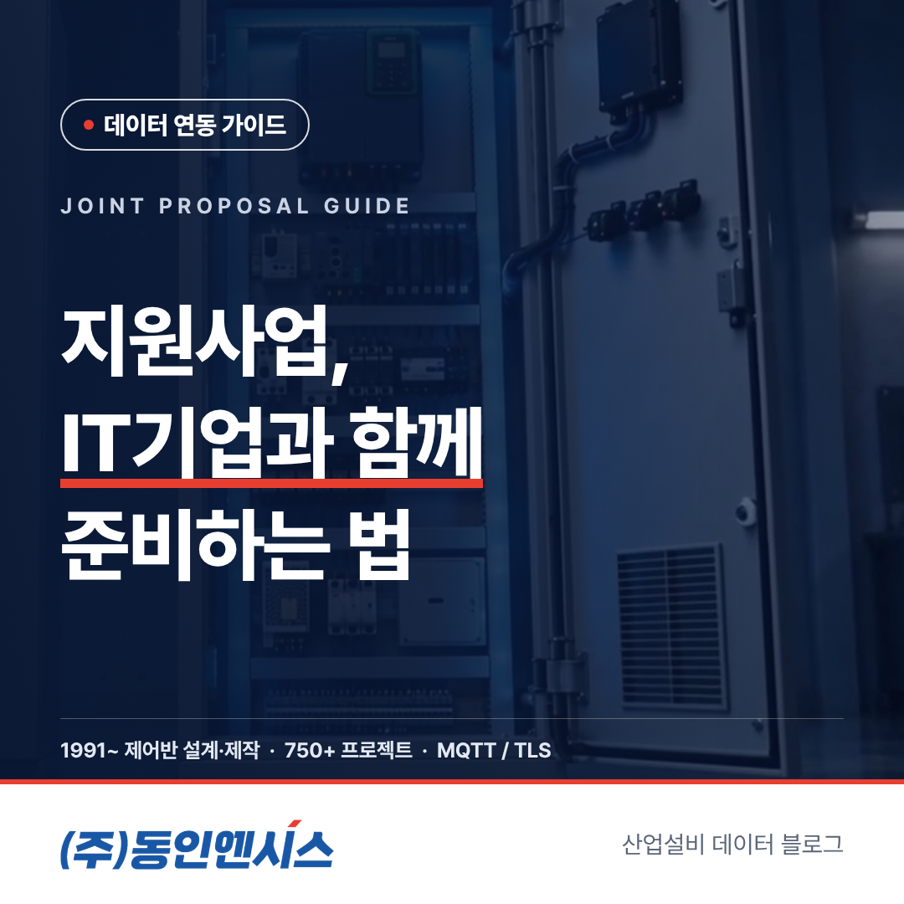
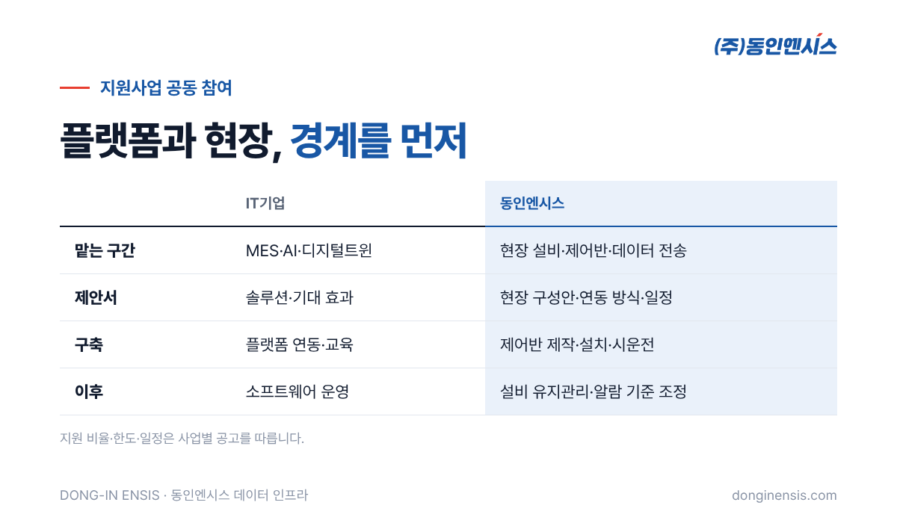
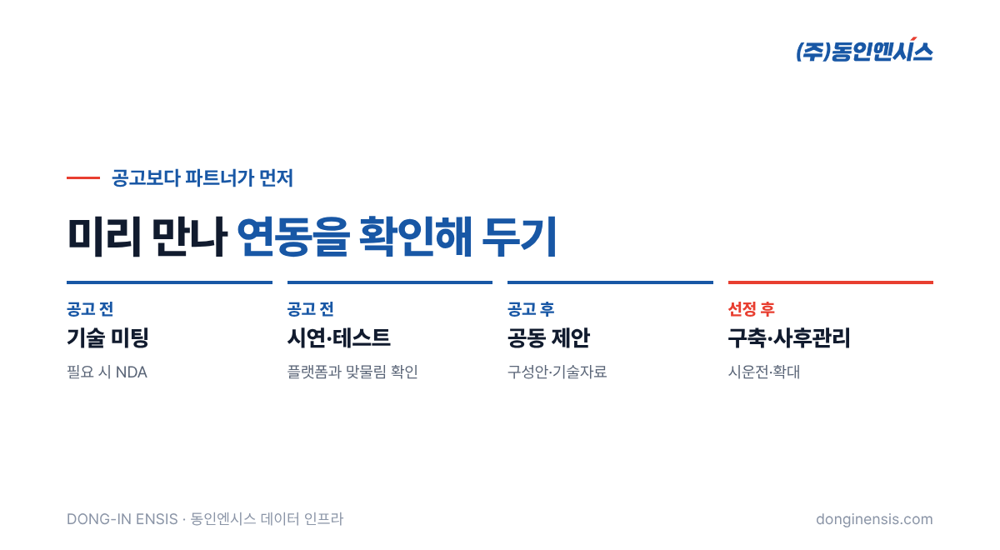

스마트공장 지원사업 공고가 뜨면 제조기업만 바빠지는 것이 아닙니다. MES나 AI 솔루션을 가진 IT기업도, 현장 설비를 맡을 회사도 함께 움직여야 합니다. 그런데 막상 제안서를 쓰려고 보면 "현장 설비 쪽은 누가 맡지?"라는 질문에서 자주 막힙니다. 1991년부터 산업 설비의 제어반을 만들어 온 부산 기업이자, 이제는 그 제어반을 데이터의 출발점으로 삼는 동인엔시스가, IT기업과 함께하는 지원사업 공동 참여에 대해 자주 받는 질문에 답했습니다.
먼저 짚어 둡니다. 지원 비율, 한도, 일정은 사업마다 다르고 해마다 바뀝니다. 이 글은 특정 사업의 조건이 아니라 함께 준비하는 방법에 대한 이야기이며, 세부 조건은 반드시 해당 공고를 확인해 주세요.
스마트공장이나 제조 AI 사업의 결과물은 결국 현장 설비에서 나온 데이터 위에 서 있습니다. IT기업이 화면과 분석을 아무리 잘 만들어도, 설비에서 데이터가 제대로 나오지 않으면 사업 성과를 보여 주기 어렵습니다.
현장마다 PLC 기종과 통신 방식이 다르고, 오래된 설비는 데이터를 꺼내는 것부터 일이 됩니다. 이 부분을 사업 중간에 발견하면 일정 전체가 흔들립니다. 이 구간을 사업 일정 안에 해내려면 제어반과 현장 설비를 잘 아는 파트너가 처음부터 함께하는 편이 안전합니다. 동인엔시스가 IT기업과의 세 가지 협업 방식 가운데 하나로 '공동 제안·영업'을 두고, 그 안에 정부 지원사업 공동 참여를 포함한 이유입니다.
사업 구성에 따라 다르지만, 일반적으로는 이렇게 나눕니다.
| 구분 | IT기업 | 동인엔시스 |
|---|---|---|
| 주로 맡는 구간 | MES·AI·디지털트윈 등 플랫폼과 화면 | 현장 설비, 제어반, 데이터 수집과 전송 |
| 제안서에서 | 솔루션 구성과 기대 효과 | 현장 구성안, 설비 연동 방식, 일정 |
| 구축 단계에서 | 플랫폼 설치·연동·교육 | 제어반 설계·제작·설치, 시운전 |
| 이후 | 소프트웨어 운영 지원 | 설비 쪽 유지관리, 알람 기준 조정 |
경계가 분명해야 일정이 꼬이지 않습니다. 지원사업은 정해진 기간 안에 결과를 보여 줘야 하기 때문에, 한쪽이 늦어지면 다른 쪽도 함께 늦어집니다. 특히 '데이터가 어떤 형식으로 넘어오는가'를 제안 단계에서 정해 두면, 구축 단계에서 서로를 기다리는 시간이 크게 줄어듭니다.

지원사업 공동 참여는 대개 아래 흐름으로 준비합니다.
동인엔시스는 스마트공장 공급기업으로 등록되어 있고, 공급기업 역량진단도 신청해 둔 상태입니다.
공고가 나온 뒤에 파트너를 찾기 시작하면 제안서를 쓸 시간이 빠듯합니다. 미리 해 둘 수 있는 일이 있습니다.
이렇게 준비해 두면 공고가 떴을 때 '처음 만나는 파트너'가 아니라 '이미 연동을 확인한 팀'으로 제안할 수 있습니다. 평가하는 입장에서도 현장 구성과 플랫폼 연동이 이미 검증된 제안은 실행 가능성을 판단하기 쉽습니다. 지원사업 공동 참여에서 준비 기간이 곧 경쟁력이 되는 이유입니다.
Photorealistic photo of four Korean professionals in a bright meeting room reviewing printed proposal documents and a laptop showing an abstract system diagram with factory equipment icons and cloud icons (no readable text), sticky notes on a glass wall, natural daylight, documentary style, no brand logos, no readable text. 3:2 landscape.
시연 장비는 실제 제어반에서 나오는 것과 같은 형식의 데이터를 만들어 내는 장비입니다. IT기업은 고객 현장에 가기 전에 이 데이터를 받아 자사 화면과 분석에 연결해 볼 수 있습니다.
지원사업 공동 참여에서 시연 장비가 특히 쓸모 있는 이유는 두 가지입니다. 하나는 제안 단계에서 '실제로 연결된다'는 것을 눈으로 보여 줄 수 있다는 점이고, 다른 하나는 구축 단계에서 생길 연동 문제를 미리 걸러낼 수 있다는 점입니다. 함께 제조 고객을 찾아갈 때 시연 장비를 들고 가기도 합니다. 제조기업 담당자는 화면 속 그래프가 실제 모터의 움직임과 함께 바뀌는 것을 보면, 사업이 끝난 뒤 자기 공장에서 무엇을 보게 될지 훨씬 구체적으로 그릴 수 있습니다.
동인엔시스는 설비 데이터를 같은 틀로 정리해 넘깁니다. 공장과 설비마다 고유 번호를 붙이고, 그 아래 센서 정보를 정해진 칸에 채우는 방식입니다. IT기업은 이 데이터를 REST API로 모아 받거나 WebSocket으로 실시간으로 받습니다.
지원사업 참여에서는 이 형식이 일정 관리에 직접 영향을 줍니다. 대상 설비가 펌프든 송풍기든 받는 쪽 형식이 같기 때문에, IT기업은 설비가 늘어날 때마다 연동 코드를 새로 짜지 않아도 됩니다. 사업 기간 안에 대상 설비 수를 늘리기도 수월해집니다. 사업이 끝난 뒤 제조기업이 자체 예산으로 설비를 더 붙일 때도 같은 구조가 이어지므로, 지원사업이 일회성 구축으로 끝나지 않고 다음 단계로 이어지기 좋습니다.

공동 참여는 여러 회사가 한 사업에 이름을 올리는 일이라, 시작 전에 정리해 둘 것이 있습니다.
데이터의 소유와 이용 범위, 보관 기간은 동인엔시스가 모든 프로젝트에서 계약으로 정하는 항목입니다. 지원사업이라고 다르지 않습니다. 오히려 여러 회사가 함께하는 만큼, 시작 전에 글로 정리해 두는 것이 사업이 끝난 뒤의 관계까지 편하게 만듭니다.
Photorealistic photo of a compact tabletop industrial demo unit on a meeting table: a small light-grey control panel with a touchscreen, a small electric motor and sensor cables, connected to a laptop showing abstract live charts (no readable text), two people's hands pointing, clean office background, no brand logos, no readable text. 3:2 landscape.
지원사업은 공고가 뜬 뒤에 시작하면 늦습니다. 현장과 플랫폼을 맡을 회사가 미리 만나 연동을 확인해 두면, 제안서도 구축도 훨씬 단단해집니다. 지원사업 공동 참여를 고민하는 IT기업이라면 기술 미팅부터 가볍게 시작해 보셔도 좋습니다.
협업 문의 051-862-3668 · dongin@donginmne.com
아래 질문 중 하나에 실제 경험으로 답해 본문 적당한 곳에 넣어 주세요. 사람이 직접 쓴 문장이 들어가면 네이버에서 저품질 위험이 줄고 노출에 도움이 됩니다.